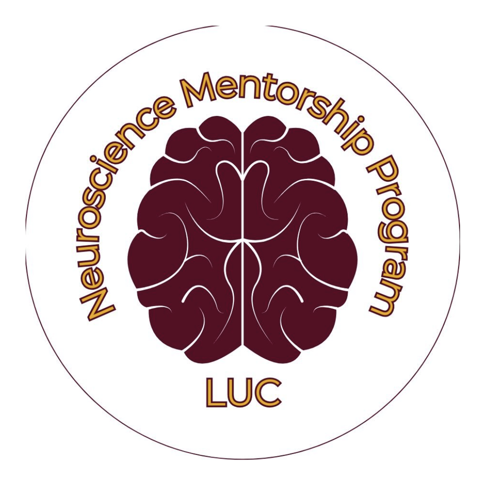

Research
Explore research experiences and opportunities to develop skills alongside mentors.

LUC Neuroscience05 / PROFESSIONAL DEVELOPMENT
Explore research, clinical, study abroad, and career-building experiences with the LNMP Summer 2027 Opportunity Bank.
FEATURED GUIDE · 16 PAGES
Browse the full guide below. Use the PDF viewer controls to move through the pages, zoom in, or open the document separately.
Use this opportunity bank as a starting point for planning your summer. Review the details in the guide, then follow each program's official instructions to confirm current eligibility, deadlines, and application requirements.
Embedded PDF viewer · 16 pages
If the PDF does not appear in your browser, select “Open Full PDF” above. Availability, eligibility, and deadlines can change; confirm details with each opportunity provider.
EXPLORE YOUR NEXT STEP
Use the guide to explore experiences that can help you build skills, connections, and direction.
Explore research experiences and opportunities to develop skills alongside mentors.
Learn about experiences that can provide exposure to patient care and health professions.
Consider global learning and cross-cultural experiences as part of your development.
Explore ways to connect neuroscience interests with broader academic and professional paths.
NEED A HUMAN?
Reach out to the mentorship community for help thinking through research, career exploration, or your next steps.